| 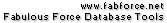 | |
Through the main menu you gain access to general functions of the program. There are seven main menu items, File, Edit, Display, Database, Options, Windows and Help.
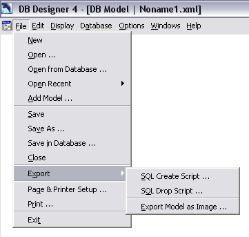
The File Menu
File - New creates a new empty model. If you have opened another model before you can switch between the new and the other model using the Windows menu.
File-Open ... opens an existing model from your harddisk or mapped network device. DBDesigner creates a new empty model every time it is started so you can start modelling immediately. If you open a model and no changes have been applied to the empty model it is closed automatically and replaced with the opened model.
File - Open from Database ... makes it possible to open a model saved in a database. When selected this menu item the DB-Connection Dialog pops up and you have to select the database containing the desired model. There can be stored more than one model in the database so you have to select the appropriate model then.
File - Open recent displays a list of the last opened models to improve speed opening the most used models. If a new model is opened it is added to the list. If there are more than 10 entries in the list the last entry is deleted automatically.
File - Add Model ... lets you add an existing model to the currently opened model. After the model has been imported all new objects are selected so the can be moved to an appropriate position.
Use File-File-Save ... to save your model to the harddisk or a mapped network device. When you save a model for the first time, you are promt to locate the destination folder and enter the name of the model. The model is added to the File-Open Recent list automatically.
File - Save As ... can be used to save your current model with a new name. You are promt to locate the destination folder and enter the new name of the model.
It is possible to store the model directly in the database you work on. A new database table is used to store all models in this database. This new table does not interfere with the database synconisation and reverse engineering functions.
When selected the File-Save in Database ... menu item the DB-Connection Dialog pops up and you have to select the database which will containing the model. You have to enter the desired name of the model and the model will be stored.
File - Close closes the current active model.
Use this menu item to export the current active model as a SQL Create script which can be executed against the datbase manually to create the nessesary tables. You can use the database synchronise function instead which will create and update your database automatically.
Use this menu item to export the current active model as a SQL Drop script which can be executed against the datbase manually to drop the desired tables. You can use the database synchronise function instead which will create and update your database automatically.
Select this function to export the whole model as an image file. The image can be saved in the PNG or BMP file format. The PNG Format is recommended. Please note that using the BMP file format will result in very large images, approximatly 20 MB at default size.
Before printing the model you have to select the appropriate printer and set the page size and orientation as well as the scale factor of the model which enables you to print the model distributed on several pages.
File - Print ... lets you select the pages of the model an the number of copies you want to print.
File - Exit closes the program.
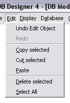
The Edit Menu
Use Edit - Undo to take back the last change applied to the model. You can use this command several times to take back all changes you made.
Edit - Redo applies the last undone action again. This command can also be repeated several times when you have undone several actions.
When you have selected on or more objects you can use this command to copy the objects to the clipboard. The objects are stored as text in XML format. You can use any other application to paste the objects.
This command is similar to Edit-Copy selected but the objects will also be deleted from the model.
Edit - Paste is used to insert previous copied objects from the clipboard. Relation are only inserted if both tables have been copied because when the objects are inserted, new object-identifiers are assigned.
Edit - Delete selected removes all selected objects from the model. When this happens unintended you can use the undo command.
Use Edit - Select All to select all objects from the model.
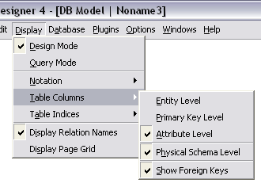
The Display Menu
Select this menu item to change to Design Mode. A checkmark will be drawn left to the menu item when Design Mode is selected.
Select this menu item to change to Query Mode. A checkmark will be drawn left to the menu item when Query Mode is selected.
Display - Notation specifies the notation used to display the model. When a notation is selected a checkmark will be drawn left to the menu item.
Display - Notation - EER will set the notation to the common EER notation.
Display - Notation - EER [1,n] will set the notation to another EER notation, displaying intervals.
Display - Notation - Traditional will change to a notation which will be familia to Erwin© users.
Display - Table Columns will specify how tables are displayed on the model. Use Display - Table Columns-Entity Level to hide all column information.
When Display - Table Columns-Primary Key Level is selected, only primary key columns are displayed.
Use Display - Table Columns-Attribute Level to display all columns of the tables.
Select Display - Table Columns-Physical Schema Level to display the datatypes of the columns.
If Display-Table Columns-Show Foreign Keys is select foreign keys are shown as columns in the appropriate tables.
This menu item is used to display each table's indices on the model.
A checkmark will be drawn left to the menu item when table indices are displayed.
Display - Display Relation Names can be selected to display the names of relations.
Select Display - Display Page Grid to show the partitioning of printable pages. You can use the Page & Printer Setup Dialog to change the initial page size.
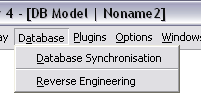
The Database Menu
Use this function to synchronise your model with a database. This function can also be used with a clear database to create all the tables.
Use this function to create a model based on an existing database.
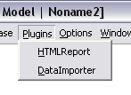
The Plugins Menu
The Plugins Menu lists a number of DBDesigner 4 plugins available in the program's directory.
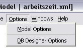
The Options Menu
Options - Model Options will call the Model Options Dialog where several options can be set for the model like the default datatype or the display font.
Options - Model Options will call the Model DBDesigner Options Dialog where several general options can be set.
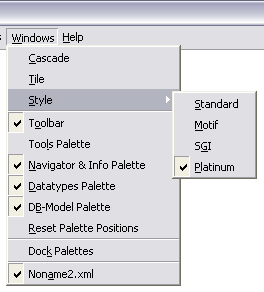
The Windows Menu
Use this command if you have opened several models and want to arrange the windows in a overlapping style.
Use this command if you have opened several models and want to arrange the windows beside each other.
The Windows-Style menu items can be used to change the overall appearance of the program.
Select Windows - Style - Standard to set the style to Windows default.
Select Windows - Style - Motif to set the style to the Motif style.
Select Windows - Style - Motif to set the style to the SGI style.
Select Windows - Style - Platinum to set the style to the Platinum style. This is the default window style.
Checked this menu item to display the Toolbar which is docked to the left of the main window.
If this menu item is checked the Tool-Palette becomes visible. It can be used instead of the Toolbar.
If this menu item is checked the Navigator & Info-Palette becomes visible. If it is unchecked the Navigator & Info-Palette is hidden.
If this menu item is checked the Datatypes-Palette becomes visible. If it is unchecked the Datatypes - Palette is hidden.
If this menu item is checked the DB-Model-Palette becomes visible. If it is unchecked the DB-Model-Palette is hidden.
Call this command to reset the palette positions to their initial locations.
Use this menu item to dock or undock the palettes to the right of the main window.
Below this menu item a list of all opened models is displayed. Select a menu item to bring the appropriate menu to the front.
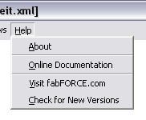
The Help Menu
Displays the splash screen.
Lauches an explorer with this documents.
Lauches an explorer and navigates to http://www.fabFORCE.net.
Lauches an explorer, navigates to http://www.fabFORCE.net/downloads.
Palettes are floating windows which always stay on top and provide fast access to important functions.
The Toolbar (and the Tools Palette) provides quick access to the most important work tools. (On a Linux system the Tools Palette is disable because of a limitation in the window system.)
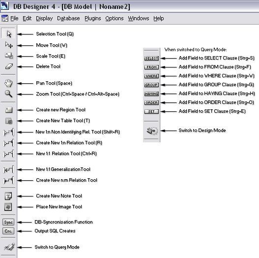
The Toolbar
To view the Tools Palette select select [Windows]->[Tools] from the main menu.
Deselect [Windows]->[Tools docked] to hide the docked palette.
By default the Tools Palette can be found on the upper left corner of the screen.
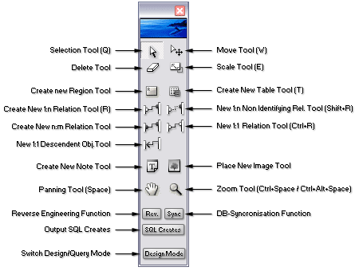
The Tools Palette
Click on the icon to activate the appropriate tool. The mouse cursor will change. Take a look at the Modelling Section to see how to use the single tools.
Clicking on the buttons will call the assigned functions. Use the mode button to switch between the Design- and Query-Mode. In Design-Mode tables can be moved with the selection tool, too. In Query-Mode you have to use the Move-Tool.
The Navigator Palette (top right) shows the current visible region of the model and can be used to navigate on the model.
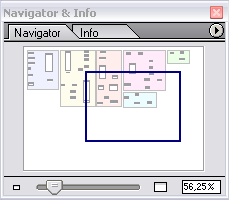
The Navigator Palette
The current visible region is marked by a blue rectangle. When the model is scrolled or moved with the panning tool the marker is moved to the new position automatically. Click on the white area to move the marker and scroll the model to the appropriate position. Depending on the speed of your machine and the size of the model you can also drag the marker.
To change to Zoom-Factor you can use the trackbar or click on the small and large table symbol left and right to the trackbar. To enter the zoom factor manually click on the zoom edit, type in the desired value (without percent charater) and press enter.
Click on the upper right icon to display the palette's popup menu. Select a menu item to set the zoom factor to the displayed value.
Click on the Info-Tab to switch to the info page. On this page you can change the name and position of the selected object. When two or more objects are selected it is not possible to a value. When an image is selected the size can also be changed.
The Datatypes-Palette (middle right) shows the existing datatypes which can be used to build the database-tables.
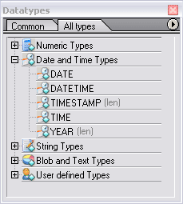
The Datatypes Palette
On the Common-Tab the most used Datatypes are visible and are ready to be dragged onto table columns. To add a new User Defined Datatype click the upper right icon to display the palette's popup menu. Select Create New Datatype and the Datatype-Dialog will be displayed showing the new created datatype. To remove a Datatype from the Common-Tab select Del from Common Datatypes from the palette's popup menu.
Click on the All types-Tab to display all available datatypes. The datatypes are split into five categries. Numeric Types, Date and Time Types, String Types, Blob and Text Types and User defined Types. Doubleclick on a category to show all assigned datatypes. New created datatypes will always be assigned to the User defined Types. Doubleclick on a datatype to call the Datatype Editor. Select and right click on a datatype and select Add to Common Datatypes to add a Datatype to the Common-Tab.
If you want to replace a datatype or change a parameter in several tables then you can use the Replace Datatypes in Tables function from the palette's popup menu. It works just like the Search and Replace function in Word©.
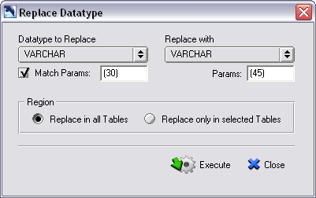
The Replace Datatype Dialog
Select the datatype you want to replace. Then select the datatype which should be inserted. To change only the parametes of a datatype select the same datatype in both dropdowns and check the Mach Params flag and enter the parameter you want to replace and the parameter which should be inserted.
Select the Region of the function and press Execute to replace the datatype.
To reset the datatypes to their initial state select Reinitialise Datatypes from the palette's popup menu. The inital settings will be loaded from the ini-files. Manually created datatypes will be replaced by the standard datatype of the model.
The DB-Model-Palette displays all existing tables in the model and their columns and relations.
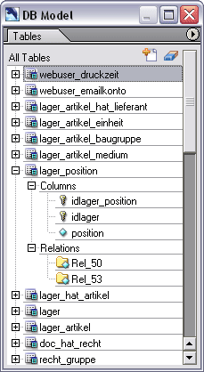
The Model Palette
Click on the plus symbols to display the columns and relations of a table. Doubleclick on a table to call the Table Editor or select Edit Object from the table's popup menu.
The Statusbar displays information about the currently selected Tool an can be used to read and set the zoom factor to a predefined value, fast.
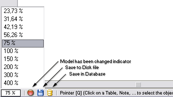
The Statusbar
Click on the Zoom Factor Edit left on the Statusbar. A list of zoom factors pops up. Select the desired zoom factor or press ESC to close the list.
If the database model is modified the indicator left to the Zoom Factor Edit is painted red. Click on the Disc Icon to save to model to disk. Click on the Database Icon to save the model in a Database.
Copyright 2003 fabFORCE.net. All rights reserved. |
|